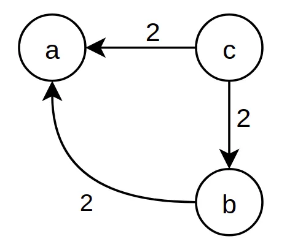
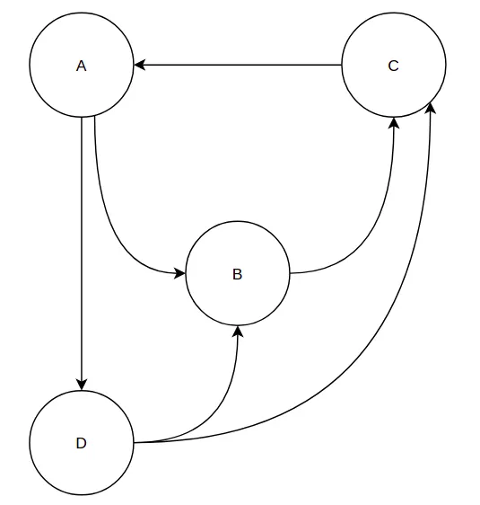
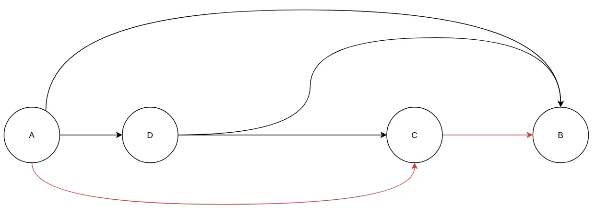
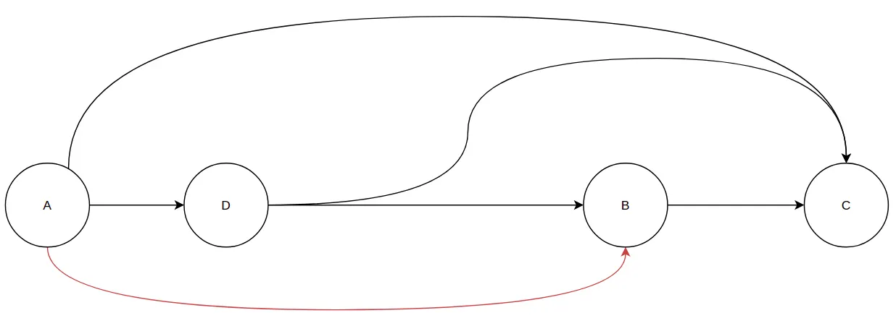
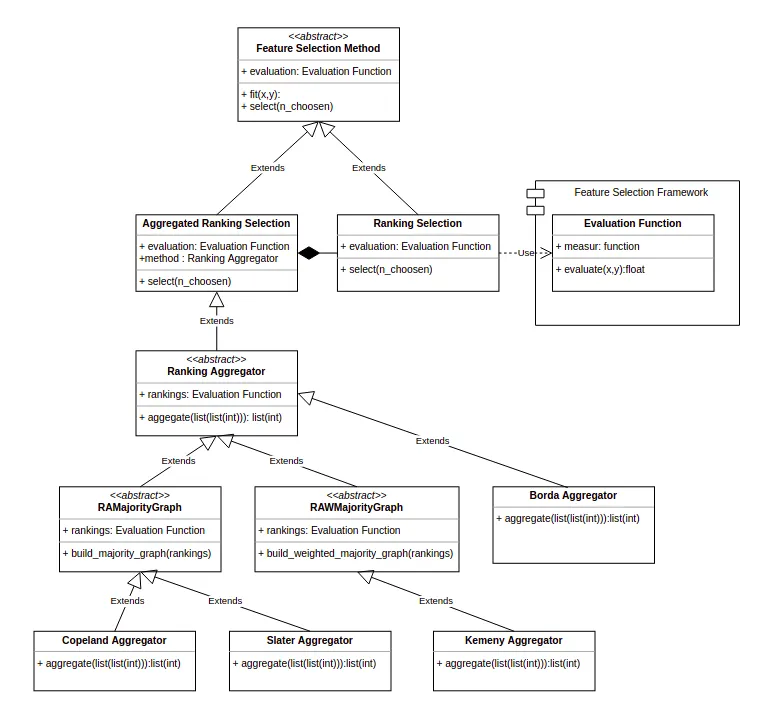
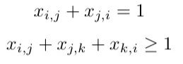
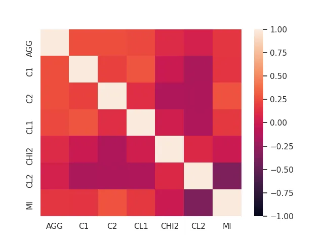
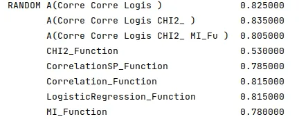

The power of democracy in Feature Selection
Using Condorcet Methods to aggregate Feature Selection rankings
According to Wikipedia, feature selection, also known as variable selection, attribute selection, or variable subset selection, is the process of selecting a subset of relevant features (variables, predictors) for use in model construction.
Feature selection techniques are used for several reasons:
- simplification of models to make them easier to interpret by researchers/users.
- shorter training times,
- to avoid the curse of dimensionality,
- enhanced generalization by reducing overfitting.
We studied a class of feature selection methods in a precedent story: the ranking methods.
A ranking method is a method that ranks the features of a dataset according to a quality measure and selects the first ones.
They are five kinds of measure: Distance, Information, Consistency, Dependency, and Classification Accuracy, and we saw that according to the type of measure we take, we could obtain very different rankings, and this conduces the various rankings to be efficient for some datasets and entirely inefficient for others, hence the need of using many measures.
Suppose we see each measure as an elector and each attribute as a candidate. In that case, the rankings can be viewed as orders of preferences, and thus, we could apply an election method to compute an aggregated ranking.
This post will first give a background on computational social choice; after that, we’ll see how we could aggregate rankings from multiple feature selection methods with the Kemeny method. Finally, we’ll evaluate the performances of the aggregation of the rankings compared to each ranking.
Computational Social Choice Background
Profile of preferences
Say that you have n candidates, m electors. Each elector gives us an order of preferences on the candidates in this form a ≥ b ≥ … ≥ z that we’ll call “profile of preferences.”
If you want to elect a candidate, which protocol should you use? What property do you want to have? And for what price in terms of complexity?
Majority graph
The majority graph is a graph where each candidate is a vertex;
We draw a directed edge from a candidate x to a candidate y if x is strictly preferred to y by the majority, i.e., if the number of electors who prefer x to y: k(x) is strictly greater than the number of electors who prefers y to x: k(y).
We weight each directed edge between a candidate x a candidate y by the difference k(x)-k(y) in a weighted majority graph.
Condorcet winner
A Condorcet method is an election method that always elects a Condorcet winner; a candidate is a Condorcet winner if he beats all the others in a head-to-head vote; for example, the two-rounds election is not a Condorcet method, let’s take an example to illustrate that :
Suppose you have 8 electors with this profiles of preferences
- 3 electors: a ≥ c ≥ b
- 3 electors: b ≥ c ≥ a
- 2 electors: c ≥ b ≥ a
The two-rounds election is an election where voters cast a single vote for their preferred candidate. The election proceeds to a second round only if no candidate has received a simple majority (more than 50%) votes cast in the first round.
In this example, a and b go to the second round, and b wins; let’s look at the majority graph.

We can see that c wins in any head-to-head election, but still, he is eliminated in the first round; this is known as the paradox of Condorcet.
Condorcet Methods
A Condorcet method is a method that always elects the Condorcet winner (if there is any).
Many Condorcet methods may require different levels of knowledge on the majority graph.
Borda Method
Some methods don't require any knowledge on the majority graph, like the Borda count, which is computable in a linear time (O(n*m))
Assume we have n electors, To compute the aggregated ranking with the Borda count, we give each candidate n points each time he’s in the first position of an elector’s preferences, n-1 for each time he’s in the second position, and so on.
In the above example, “a” will have 14 points, “b” will have 16 points, and “c,” the Condorcet winner, wins with 18 points.
Copeland Method
Some other methods are also based on a count but require the unweighted majority graph, which we can compute in a quadratic time O(m*n²) because we have to compare each pair of candidates. Each comparison involves all the electors.
Provided we have the unweighted majority graph, commuting the Copeland ranking is straightforward.
To compute the aggregated ranking with the Copeland count, we give each candidate 2 points if he beats another candidate in the majority and 1 if he’s even with him.
In the précedent example, “a” will have 0 points, “b” will have 2 points, and “c” will, of course, win with 4 points.
Slater Method
The Slater method also requires the unweighted majority graph but computing an aggregated ranking with the Slater method is an NP-Hard problem, more precisely an NP-Complete problem.
That means that we could not find an algorithm running in a polynomial time to compute an aggregated ranking with the Slater method unless P=NP, which is highly unlikely.
The aggregated ranking with the Slater method is the ranking that minimizes the number of disagreements; we count 1 disagreement in a ranking R each time a candidate beats another in the majority but is ranked after him in R.
For the above example, c ≥ b≥ a have the minimum number of disagreements; we found it easily because the majority graph is acyclic, so any Topological Ordering is a ranking that minimizes the number of disagreements.
According to Wikipedia definition, a topological sort or topological ordering of a directed graph is a linear ordering of its vertices such that for every directed edge uv from vertex u to vertex v, u comes before v in the ordering.
Let’s imagine it’s not the case, imagine we have a profile of preferences that gives us the following graph:

First, since we have a cycle (A, B, C), we will have to reverse at least one arc, which means that the best ranking we could find will have at least one disagreement depending on which will be the last in the trio A, B, C.
We could, for example, reverse (B, C) and (C, A) and thus have this graph.

And have this ranking A ≥ D ≥ C ≥ B that have 2 disagreements because B beats C in the majority and A beats C in the majority.
It’s not the Slater ranking since we can do better by not reversing (B, C) we’ll have :

And thus, deduce this ranking: A ≥ D ≥ B ≥ C that has 1 disagreement and is a Slater’s ranking (because we can’t do less).
Kemeny Method
This method is very similar to the Slater ranking:
The aggregated ranking with the Kemeny method is the ranking that minimizes the number of disagreements; we count 1 disagreement in a ranking R each time a candidate is prefered to another by an elector but is ranked after him in R.
So the Kemeny’s ranking is a ranking that minimizes a distance called the Kendall Tau distance, and thus, intuitively, if the initial rankings of the electors are close to each other, getting the aggregated ranking is easy.
Talking about complexity, computing Kemeny’s ranking is also an NP-Complete problem, which means that we cannot found an algorithm that runs in a time that is a polynomial function of the size of the instance (n*m).
In fact, a dynamic programming approach would take O(m²n2ᵐ) operations (check this article for more details).
However, we still have an interesting property that provides us an efficient preprocessing that significantly reduces the computation time.
To introduce this property, we have to introduce the notion of a proper candidate.
A candidate is said to be proper if for each other candidate b, b is better than him for at least 3/4 of the electors or b is worst than him for at least 3/4 of the electors.
Let’s take an example of this with an application case.
Let’s say that four teachers are in a scientific team and they are seeking interns, but they don't know in advance how many interns they will be allowed to take; each teacher could provide a preference order on the students that applied to the internship based on the marks the student get in his course, and thus we’ll have a preference order for each teacher.
Let’s consider four candidates and the following profile:
- a ≥ c ≥ b ≥ d
- a ≥ c ≥ b≥ d
- d ≥ b ≥ a ≥ c
- c ≥ a ≥ b≥ d
An example of a proper candidate is a, and since he beat every other candidate in 3 of the four courses, he will be the first in the aggregated ranking. Thus he will be taken whatever the number of interns selected.
Based on this intuition, this article states that we can reduce the number of candidates to 11Δ, where Δ is the mean distance between rankings.
This process is known as kernelization.
The kernelization is a preprocessing analysis that allows us to reduce the problem to a smaller problem called the kernel; here, the size of the kernel is a polynomial function of the mean distance between rankings.
Implementation of the methods
Global Framework
In a precedent post, I explained how we could design an extensible framework to group many feature selection ranking methods; now, it’s an excellent occasion to see how we can extend it.
The idea is that each feature selection method selects the features to keep after ranking them with an evaluation function; now, we must add to the framework a class of feature selection methods that sets features based on an aggregation of many rankings coming from multiple evaluation functions.
We must also keep in mind that we could have any subset of evaluation functions to aggregate and aggregate them with any preceding methods.
A quick modelization gives us this diagram that we’ll use as a map for what follows.

In this tutorial, I will explain the implementation of the Kemeny aggregator, but we can quickly implement the others the same way.
Weighted Majority Graph
First, we have to implement a weighted majority graph builder; to do so, we’ll consider the adjacency matrix representation and use NumPy.
def build\_weighted\_majority\_graph(self, rankings, n\_candidates):graph = np.zeros((n\_candidates, n\_candidates))rankings = np.array(rankings)candidates = list(np.unique(rankings))for i in range(len(candidates)):for k in range(i+1,len(candidates)):r = 0for ranking in rankings:p1 = np.where(ranking == candidates[i])[0][0]p2 = np.where(ranking == candidates[k])[0][0]if (p1 < p2):r += 1else:r -= 1if(r > 0):graph[i,k] = relif(r < 0):graph[k,i] = -rreturn graph
After that, we have to think about how we could obtain the Kemeny ranking from the majority graph. To do so, we’ll use the linear programming paradigm.
If you are not familiar with this paradigm, I suggest to you my article about it in Julia, but, as you will notice, it’s pretty similar.
Kemeny Ranking with Linear Programming
To build a linear program for the Kemeny ranking problem, we must first describe the solution space using variables and a set of related constraints.
A ranking is an order of preferences on the candidates, so to represent it with a set of variables, we must use m² boolean variables, one for each pair of candidates.
Each variable xᵢⱼ is set to 1 if the candidate j is preferred to the candidate i in the final ranking.
If a ranking is an order of preferences, not any order of preferences is a ranking. First, a ranking is a total order, which means that we either prefer one or the other for any pair of candidates. Also, a ranking is an order where the preference is transitive because if we rank x before y and y before z, we necessarily rank x before z.
This could be represented with the following constraints:

The first inequality means: “We have i after j orj after i in the ranking,” and the second one is violated if “we have i before j, jbefore k and not i before k in the ranking.”
Now, we have to determine the objective function to optimize.
As we said before, we have to minimize the number of disagreements, so, to have the number of disagreements of a ranking, we build a weighted sum of the variables where each variable xᵢⱼ is weighted by the weight of the arc (i,j).
We can do this with the following code:
import numpy as npimport pulp as pldef aggregate\_kemeny(graph):prob = pl.LpProblem("Kemeny Ranking Problem", pl.LpMinimize)nodes = range(graph.shape[0])x = pl.LpVariable.dicts("X", (nodes, nodes), cat='Binary')e = 0for i in range(graph.shape[0]):for j in range(graph.shape[0]):if (i == j):continueprob += (x[i][j] + x[j][i] == 1)for k in range(graph.shape[0]):if(k == j):continueprob += (x[i][j] + x[j][k] + x[k][i] >= 1)e += graph[i,j] \* x[i][j]prob += eprob.solve()rates = np.zeros(graph.shape[0])for i in nodes:for j in nodes:if(i == j):continueif(pl.value(x[i][j]) == 1):rates[j] += 1return rates.argsort()[::-1]
Experimental results
In this experimentation, I first investigated the differences between the rankings of different feature selection methods.
To do so, I drew a heatmap of the Kendall-Tau distance between the rankings coming from different feature selection measures and their aggregation with the Kemeny method.
The Kendall Tau distance is a measure of the correspondence between two rankings. Values close to 1 indicate strong agreement, and values close to -1 indicate strong disagreement.
The measures considered are the ones I implemented in this post:
- Two correlation measures (C1, C2).
- Two classification measures (CL1, CL2).
- The dependency, measured by a CHI2 test.
- Mutual information (MI).
The dataset used is the IRIS dataset augmented with irrelevant features.

As we can notice, the aggregation of the measures provides us a ranking that is as close as possible to each ranking.
The second thing I wanted to investigate is the performance of the aggregated ranking.
To do so, I used a randomly sampled dataset, and I compared the accuracy achieved by the best subset of features for each measure and multiple aggregations of different measures.

We can notice many things :
- Some feature selection methods are very efficient for some datasets and very inefficient for others, but the aggregations always have good overall performances.
- The first aggregation shows us that sometimes combining many measures gives us an aggregated ranking that is more efficient than each measure used for the aggregation.
- The second aggregation shows us that adding a weak measure to the aggregation can augment the performance, but it’s not always the case, as shown in the third aggregation.
Conclusion
Using an aggregation of the rankings from different feature selection methods is very useful because it provides us a generic protocol to obtain more robust and often more efficient aggregators.
This study shows us the combinatorial aspect of building an aggregation because some measures seem to synergize positively and others not. Besides, Some measure selects features that are useful for some classifiers and useless for other ones.
So, in the end, wouldn’t it be better to think of the classifier as a decision-maker who would choose a set of measures to privilege? Measures that could interact positively or negatively.
But how could we build such a model and train it while limiting the very costly calls to the classifier?
Stay tuned to find out more about this :)